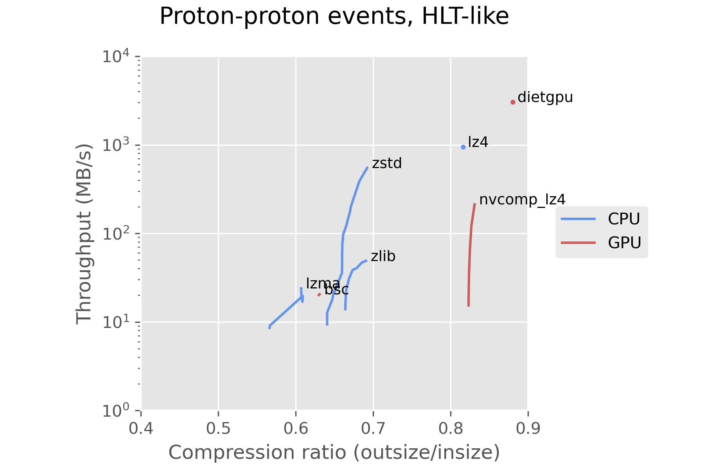
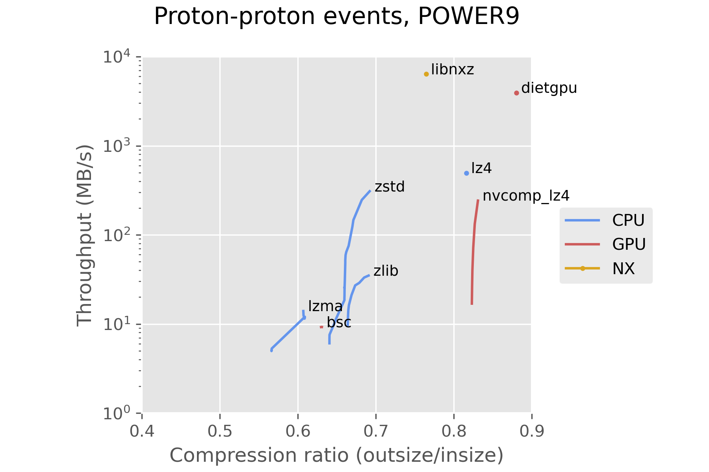
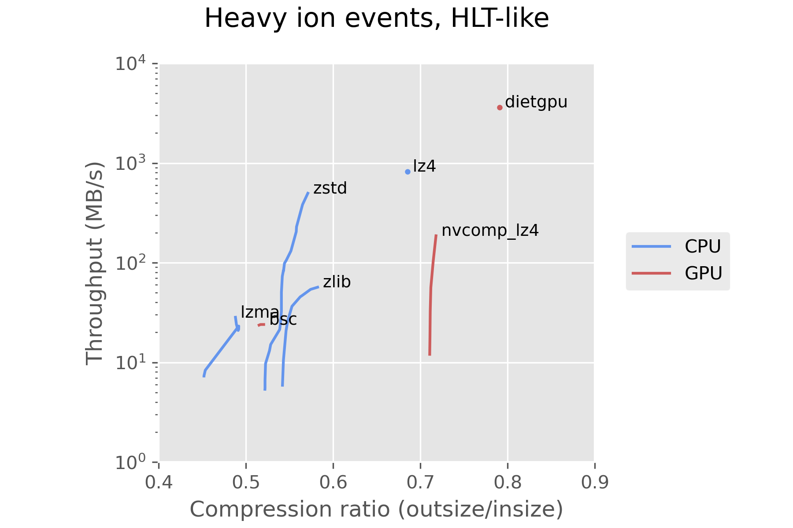
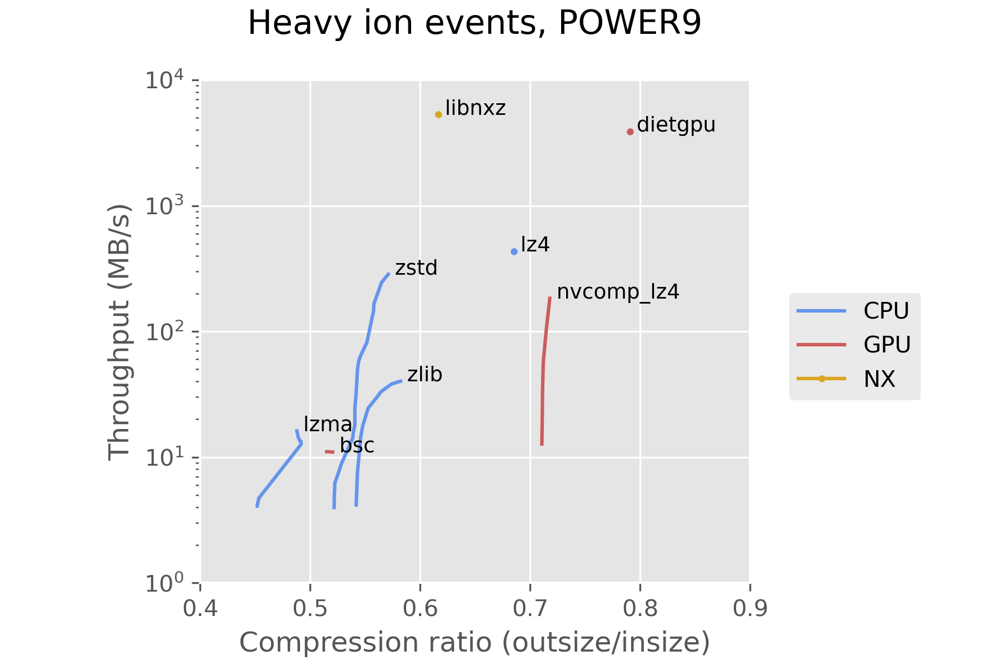

Stefan Rua
stefan.rua@iki.fi
Andrea Bocci
andrea.bocci@cern.ch
We present the results of a study on the use of GPUs for data compression, using collision data collected by the CMS experiment as a case study.
The Large Hadron Collider (LHC) at CERN can accelerate and collide protons or heavier ions, usually lead nuclei. The Compact Muon Solenoid (CMS) experiment uses a complex detector to analyse the particles produced in these collisions. As the LHC can generate collisions up to 40 MHz, which would result in too much data to be read out and stored for offline processing, CMS uses a trigger system with two level to select only the most interesting collision events: the first level, called Level-1 Trigger, uses FPGAs and dedicated electronics to reduce the data rate to a maximum of 100 kHz; the last level, call High Level Trigger (HLT), runs a streamlined version of the CMS reconstruction software (CMSSW) on a computer farm to further reduce the data rate to an average of a few kHz; from the beginning of Run-3 in 2022 the HLT farm has been equipped with GPUs. The data selected by the HLT is transferred to the Tier-0 datacentre in the CERN campus for storage and further processing. In order to speed up the data aggregation inside the HLT and the network transfers between the HLT and Tier-0, the data is compressed.
Currently the data are compressed using CPUs; as the HLT machines are equipped with GPUs, we investigate the possibility of offloading the data compression to GPUs, to free up the CPUs for performing other tasks. We also investigate the performance of the NX on-chip data compression accelerator integrated in the IBM POWER9 processors; while such machines are not used at HLT, they are used at HPC sites that run the CMS reconstruction software.
We implemented the compressors into a benchmarking program called lzbench1. When possible, compressors are compiled with the same compiler options to achieve the fairest possible comparison. lzbench runs the compression in memory, meaning that disk reads and writes are excluded. The benchmarks were run on two machines: one with a configuration similar to the machines in the HLT farm, and a POWER9 machine.
This machine is equipped with two AMD EPYC “Milan” 75F3 CPUs2 and two NVIDIA T4 GPUs3:
This machine has an IBM POWER9 CPU4 and four NVIDIA V100 GPUs5:
As a starting point, we have measured the performance of the lossless data compressors that can be used natively in CMSSW, runing only on CPU:
zlib is a compression library that implements the DEFLATE algorithm; it combines a dictionary-matching stage based on LZ77 and a Huffman entropy coding stage.We then explored the most promising compressors that can offload at least part of their computation to GPUs:
lzbench.Finally, we benchmarked the POWER9 NX compression hardware using libnxz: - libnxz15
libnxz implements a zlib-compatible API for Linux userspace programs that exploit the NX accelerator available on POWER9 and newer processors.
Two types of collisions take place at the LHC: proton-proton and heavy ion collisions. We ran the benchmarks on both types of data. In the benchmarks these events have been compressed individually, rather than as a batch, to replicate the approach used by the HLT where the events are compressed individually to ease their aggregation.
The first set of measurements were performed using 100 events from proton-proton collisions collected on August 11th, 2022 with an average pileup of 50 collisions per event. Their uncompressed size ranges between 1.4 MB and 2.1 MB, with an average of 1.7 MB per event.


The second set of measurements were performed using 100 events from lead-lead collisions collected on November 25th, 2018. Their uncompressed size ranges between 640 kB and 5.5 MB, with an average of 1.3 MB per event.


Using the CPU compressor zstd is a reasonable choice with our current hardware and the current state of GPU compressors. dietgpu is promising, and may see significant improvements in the future, as it is in a very early stage in development. dietgpu uses a compression algorithm called Asymmetric Numeral Systems, which is an important part of zstd as well. This looks promising for a future GPU implementation of zstd.
In the future it will be interesting to benchmark other hardware accelerated compression engines, like Intel Quick Assist that will be available in the upcoming Intel Sapphire Rapids Xeon CPUs.
Our fork of lzbench16 and the code used to generate the plots17 are available on github.
lzbench
An in-memory benchmark of open-source LZ77/LZSS/LZMA compressors
https://github.com/inikep/lzbench↩︎
AMD EPYC 75F3
https://www.amd.com/en/product/10931↩︎
NVIDIA T4
https://www.nvidia.com/content/dam/en-zz/Solutions/design-visualization/technologies/turing-architecture/NVIDIA-Turing-Architecture-Whitepaper.pdf↩︎
IBM POWER9
https://www.ibm.com/common/ssi/ShowDoc.wss?docURL=/common/ssi/rep_sm/5/872/ENUS8335-_h05/index.html↩︎
NVIDIA V100
https://images.nvidia.com/content/volta-architecture/pdf/volta-architecture-whitepaper.pdf↩︎
LZ4
An algorithm based on LZ77 that prioritizes speed
https://en.wikipedia.org/wiki/LZ4_(compression_algorithm)↩︎
zlib
A compression library that implements the DEFLATE algorithm
https://en.wikipedia.org/wiki/Zlib↩︎
LZMA
The Lempel–Ziv–Markov chain algorithm
https://en.wikipedia.org/wiki/Lempel-Ziv-Markov_chain_algorithm↩︎
Zstandard
A compressor that combines ANS and LZ77
https://en.wikipedia.org/wiki/Zstd↩︎
Asymmetric numeral systems
Entropy coding combining speed of Huffman coding with compression rate of arithmetic coding
https://arxiv.org/pdf/1311.2540.pdf↩︎
libbsc
A program and a library for lossless, block-sorting data compression
https://github.com/IlyaGrebnov/libbsc↩︎
DietGPU
GPU-based lossless compression for numerical data
https://github.com/facebookresearch/dietgpu↩︎
Asymmetric numeral systems
Entropy coding combining speed of Huffman coding with compression rate of arithmetic coding
https://arxiv.org/pdf/1311.2540.pdf↩︎
nvcomp
Data Compression Using NVIDIA GPUs
https://developer.nvidia.com/nvcomp↩︎
libnxz
A zlib-compatible API for Linux userspace programs that exploit the NX GZIP accelerator available on POWER9 processors
https://github.com/libnxz/power-gzip↩︎
Our fork of lzbench
https://github.com/stefanrua/lzbench↩︎
gpucomp
Code for generating plots and this poster
https://github.com/stefanrua/gpucomp↩︎